Screenshots
A tour of StreamX on Android TV. Click any picture to see it full size.
Movies and series


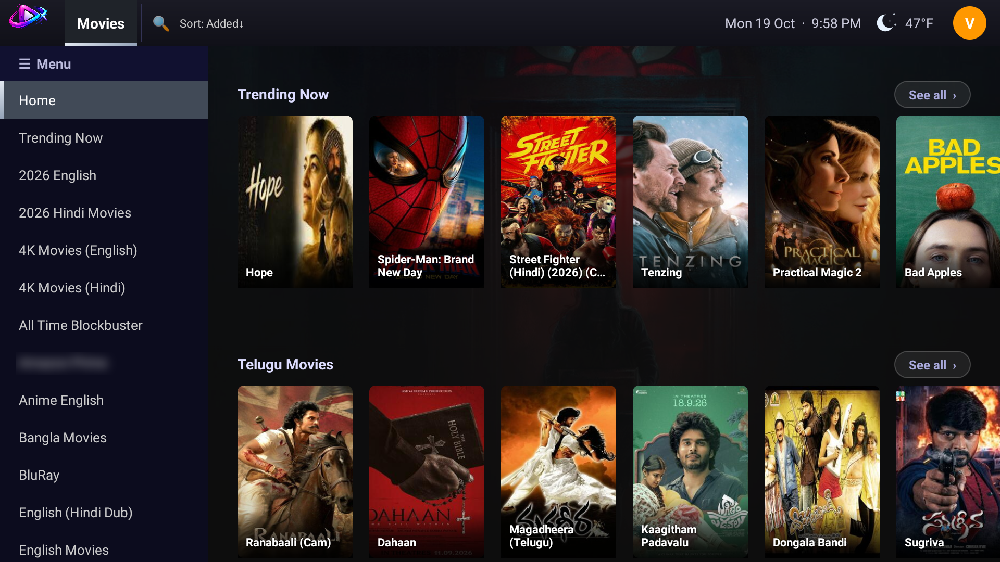


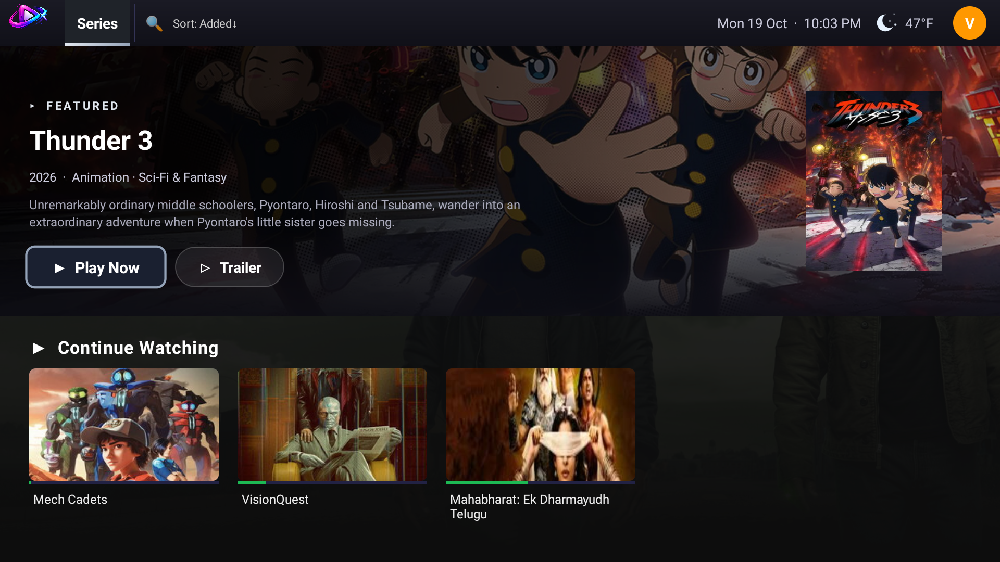

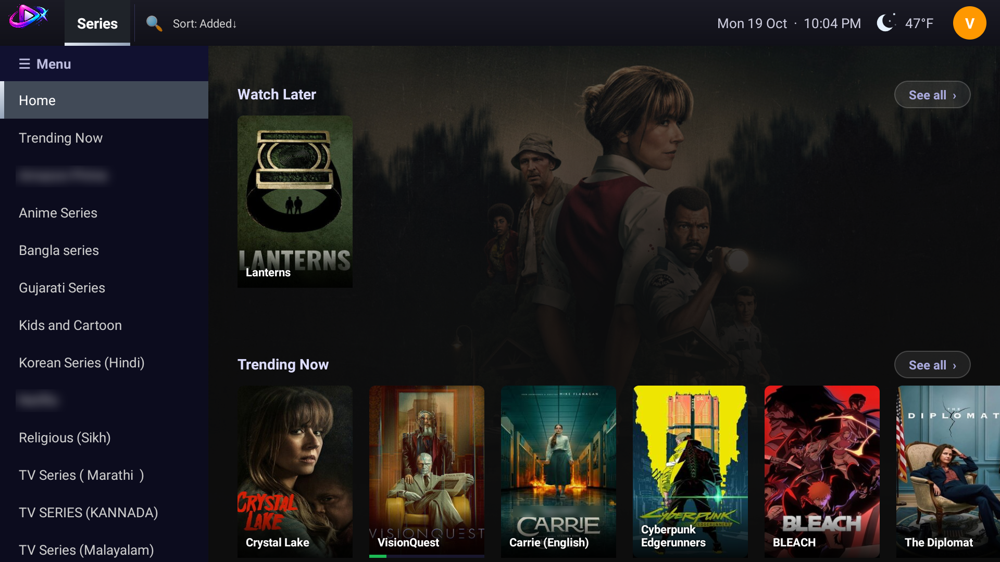

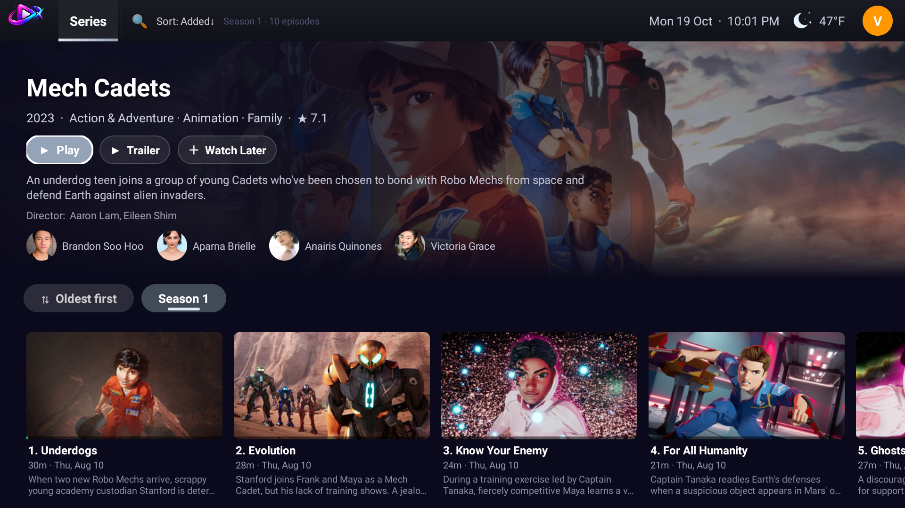

Live TV and sports

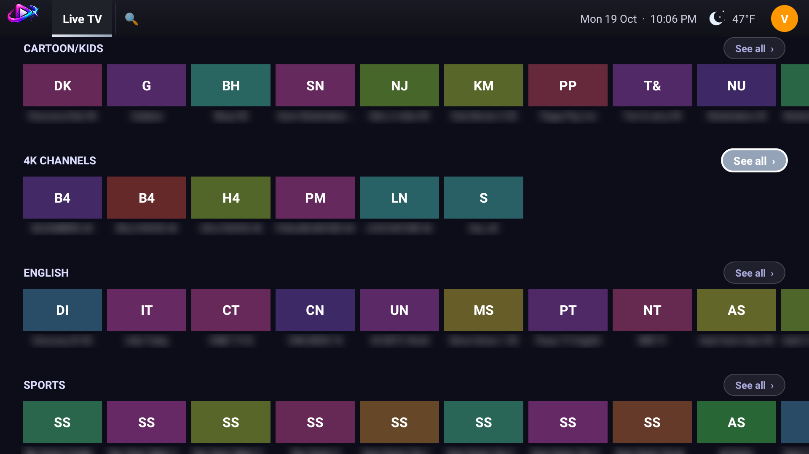

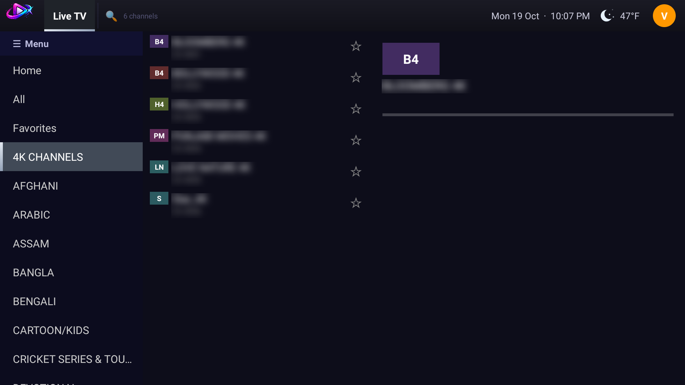

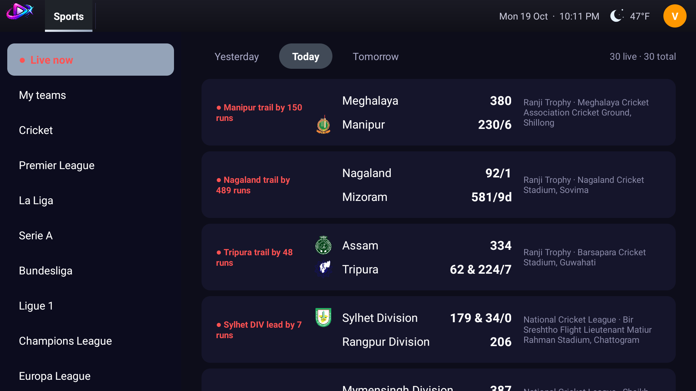
Playing and finding

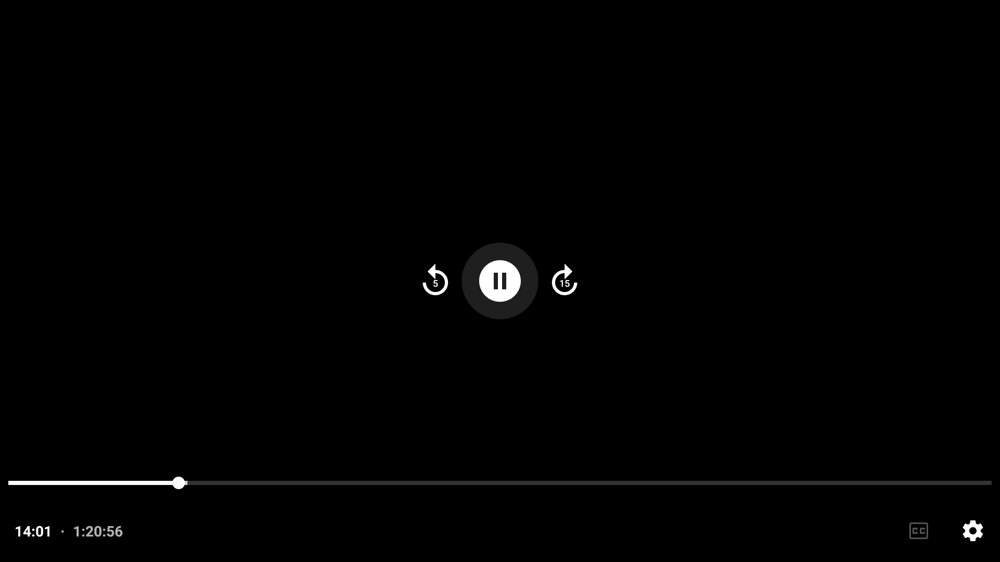

Setup and accounts


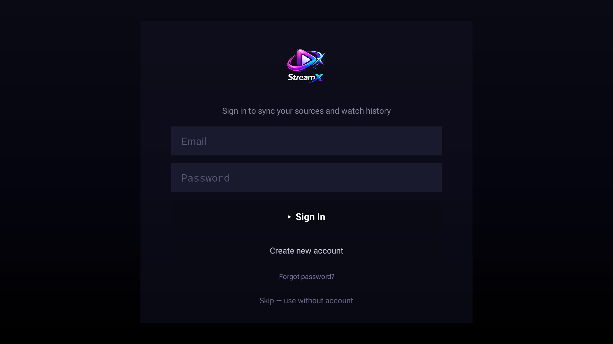


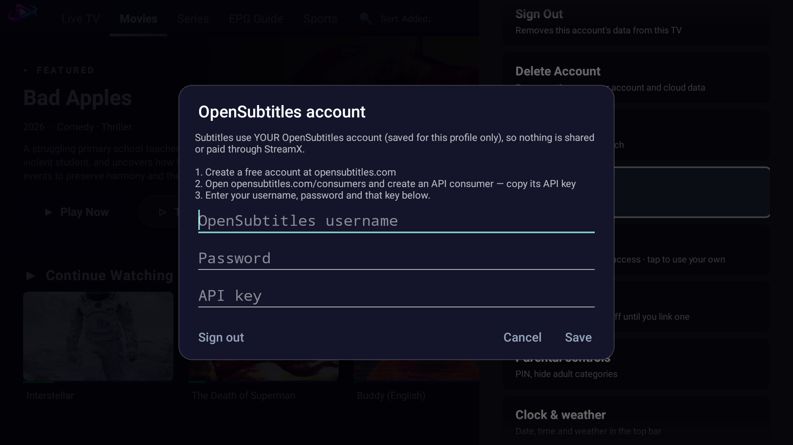

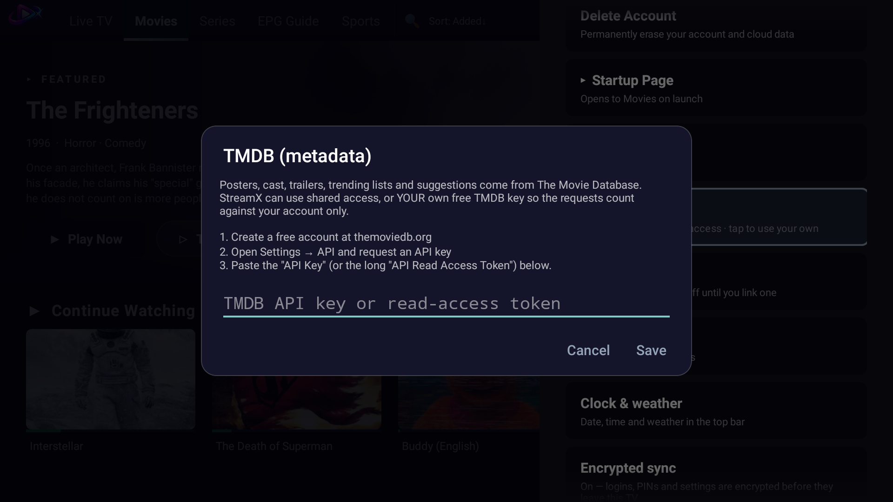

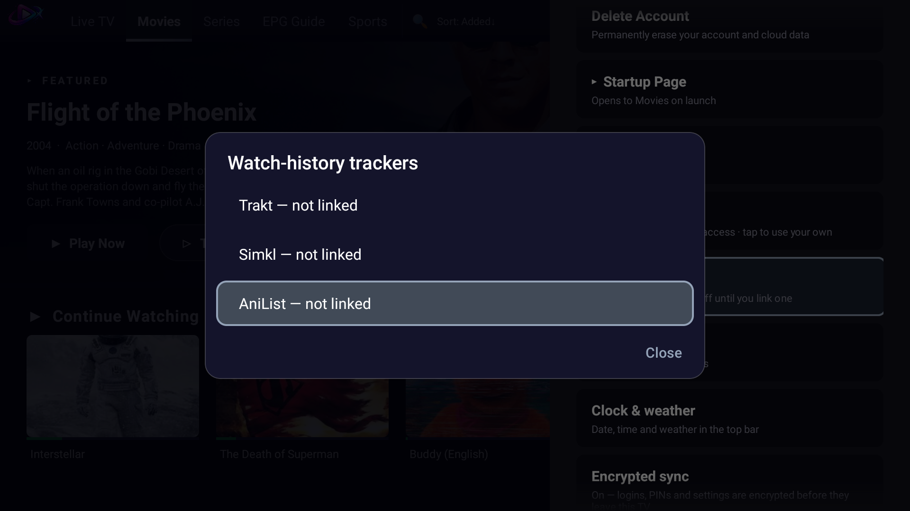
Settings

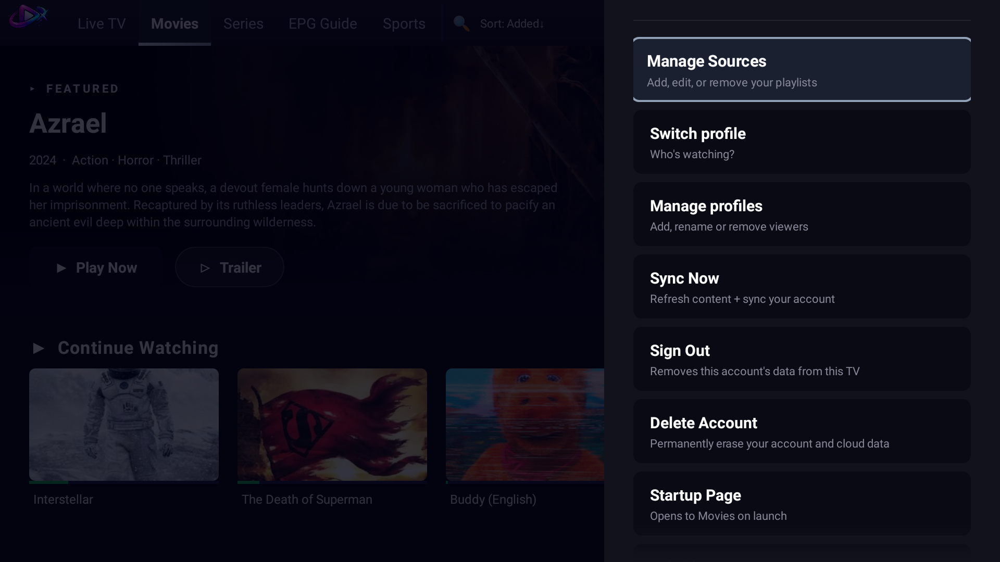

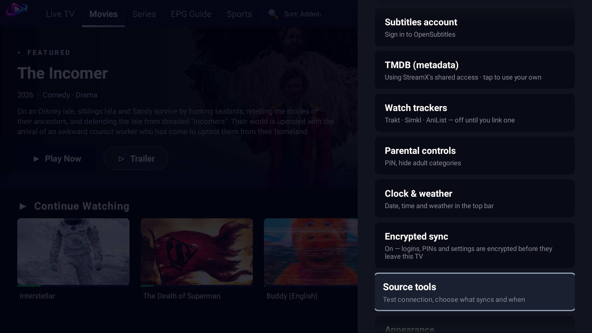

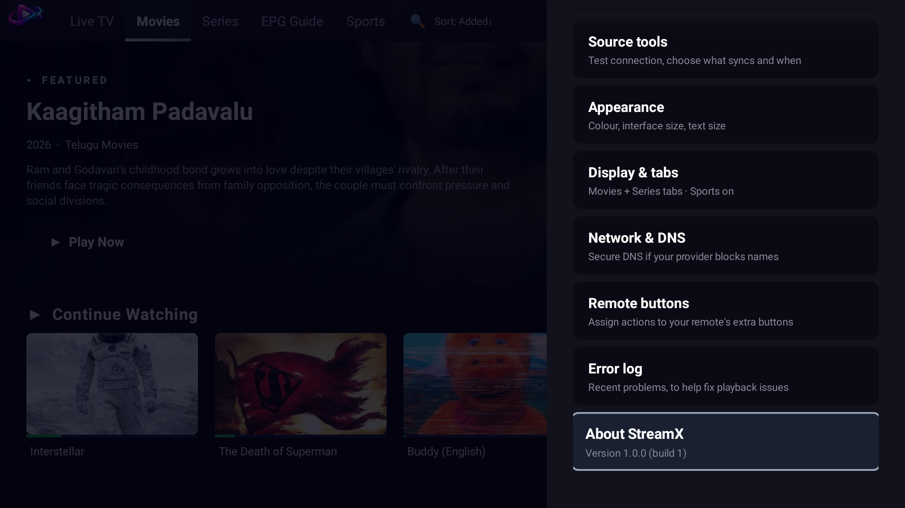

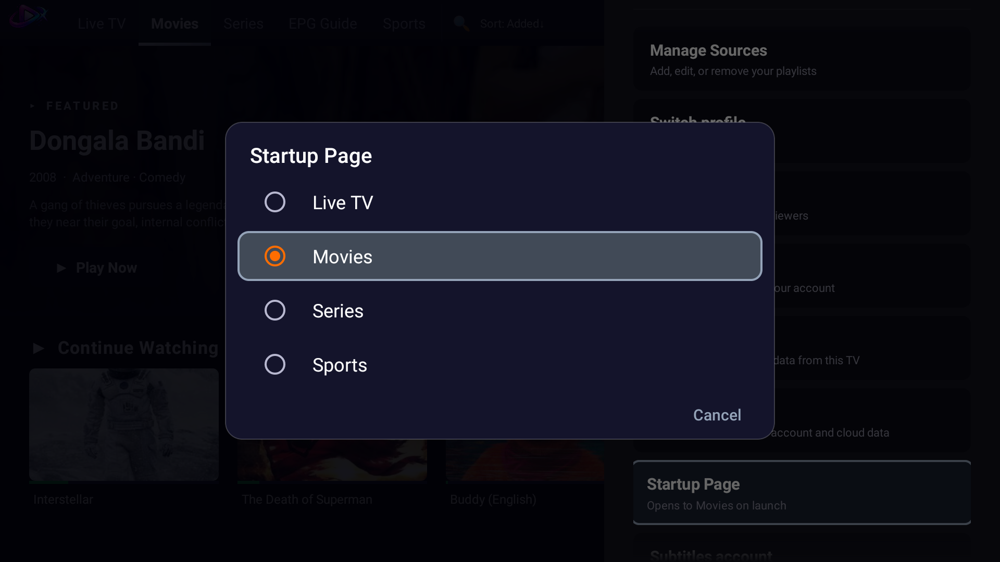

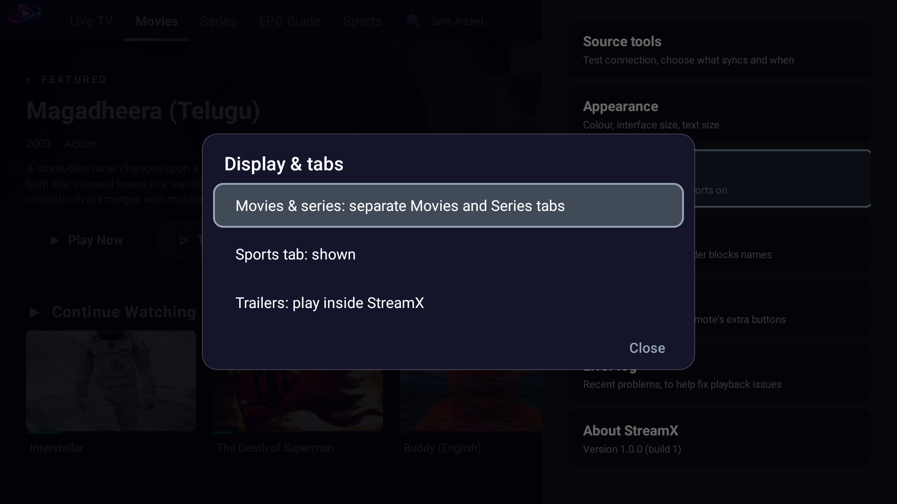